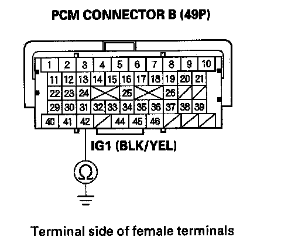
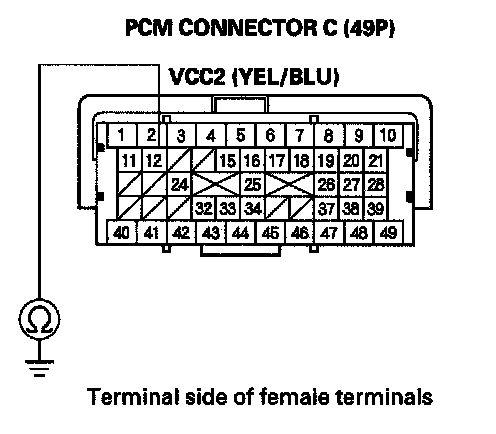
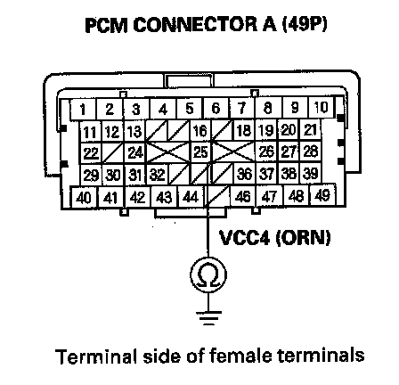

Data Link Connector: Testing and Inspection
DLC Circuit TroubleshootingNOTE: Make sure the HDS and the DLC cable of the HDS is normal.
1. Turn the ignition switch OFF.
2. Connect the HDS to the DLC.
NOTE: Make sure the HDS is properly connected to the DLC.
3. Turn the ignition switch ON (II), and read the HDS.
Does the HDS identify the vehicle?
YES - Go to step 4.
NO - Go to step 21.
4. Check for Temporary DTCs or DTCs in the PGM-FI system with the HDS.
Are any Temporary DTCs or DTCs indicated?
YES - Go to the indicated DTCs troubleshooting.
NO - Go to step 5.
5. Turn the ignition switch OFF.
6. Turn the ignition switch ON (II), and watch the SRS indicator.
Does the SRS indicator stay on?
YES - Go to the SRS system's general troubleshooting information.
NO - Go to step 7.
7. Turn the ignition switch OFF.
8. Turn the ignition switch ON (II), and watch the VSA indicator.
Does the VSA indicator stay on?
YES - Go to the VSA system's general troubleshooting information.
NO - Go to step 9.
9. Turn the ignition switch OFF.
10. Turn the ignition switch ON (II), and watch the immobilizer indicator.
Does the immobilizer indicator stay on or flash?
YES - Go to the immobilizer system's troubleshooting.
NO - Go to step 11.
11. Turn the ignition switch OFF.
12. Turn the ignition switch ON (II), and watch the SH-AWD indicator.
Does the SH-AWD indicator stay on?
YES - Go to the SH-AWD system's general troubleshooting information.
NO - Go to step 13.
13. Do the gauge self-diagnostic function to make sure the gauge is known-good. If the function test is OK, go to step 14.
14. Check for B-CAN system DTCs without the HDS.
Are any B-CAN DTCs indicated ?
YES - Go to the indicated DTCs troubleshooting.
NO - Go to step 15.
15. Turn the ignition switch OFF.
16. Disconnect the HDS from the DLG.
17. Check for continuity between DLC terminal No. 7 and body ground.
Is there 5 ohms or less?
YES - Go to step 18.
NO - Go to step 19.
18. Continue to check for continuity between DLC terminal No. 7 and body ground, while disconnecting these parts, one at a time:
- SRS unit connector A (28P)
- VSA modulator-control unit 46P connector
- Immobilizer-keyless control unit 7P connector
- Audio unit 17P connector
- SH-AWD control unit 20P connector
- Active damper control unit 14P connector
- TPMS control unit 20P connector
- MICU connector P (30P)
Does continuity go away when one of the above components is disconnected?
YES - Replace the part that caused an open when it was disconnected.
NO - Repair short in the wire between the DLC (K-line) and the VSA modulator-control unit, the immobilizer-keyless control unit, the audio unit, the SH-AWD control unit, the active damper control unit, or the TPMS control unit.
19. Connect DLC terminal No. 7 to body ground with a jumper wire.
20. Check for continuity between body ground and these connector terminals:
Is there continuity between the DLC terminal and each of the terminals in the chart?
YES - Replace the unit that does not communicate with the HDS.
NO - Repair open in the wire between the DLC (K-line) and the appropriate connector.
21. Do the gauge self-diagnostic function to make sure the gauge is known-good. If the function test is OK, go to step 22.
22. Check for B-CAN system DTCs without the HDS.
Is DTC B1168, B1169, and/or B1178 indicated?
YES - Go to step 35.
NO - Go to step 23.
23. Turn the ignition switch OFF.
24. Disconnect the HDS from the DLC.
25. Measure voltage between DLC terminal No. 16 and body ground.
Is there battery voltage?
YES - Go to step 26.
NO - Repair open in the wire between DLC terminal No. 16 and the No. 7 BACK UP (10 A) fuse in the under-dash fuse/relay box.
26. Measure voltage between DLC terminals No. 4 and No. 16.
Is there battery voltage?
YES - Go to step 27.
NO - Repair open in the wire between DLC terminal No. 4 and G503.
27. Connect the HDS to the DLC.
28. Jump the SCS line with the HDS.
29. Disconnect PCM connector A (49P).
30. Disconnect the HDS from the DLC.
31. Connect DLC terminal No. 6 to body ground with a jumper wire.
32. Check for continuity between PCM connector terminal A48 and body ground.
Is there continuity?
YES - Go to step 33.
NO - Repair open in the wire between the PCM (A48) and DLC terminal No. 6.
33. Connect DLC terminal No. 14 to body ground with a jumper wire.

34. Check for continuity between PCM connector terminal A49 and body ground.
Is there continuity?
YES - Update the PCM if it does not have the latest software, or substitute a known-good PCM, then recheck. If the symptom/indication goes away with a known-good PCM, replace the original PCM.
NO - Repair open in the wire between the PCM (A49) and DLC terminal No. 14.
35. Try to start the engine.
Does the engine start and idle smoothly?
YES - Go to F-CAN circuit troubleshooting.
NO - Go to step 36.
36. Turn the ignition switch OFF.
37. Check the No. 3IG1 MAIN (50 A) fuse in the main under-hood fuse box.
Is the fuse OK?
YES - Repair open in the wire between the No. 3 IG1 MAIN (50 A) fuse and the ignition switch. If the wire is OK, go to step 38.
NO - Repair short in the wire between the No. 3 IG1 MAIN (50 A) fuse and the main under-hood fuse box. Also replace the No. 3 IG1 MAIN (50 A) fuse.
38. Inspect the No. 8 IGP (15 A) fuse in the under-hood fuse/relay box.
Is the fuse OK?
YES - Go to step 44.
NO - Go to step 39.
39. Remove the blown No. 8 IGP (15 A) fuse from the under-hood fuse/relay box.
40. Jump the SCS line with the HDS.
41. Disconnect PCM connector B (49P).
42. Check for continuity between PCM connector terminal B3 and body ground.
Is there continuity?
YES - Go to step 43.
NO - Update the PCM if it does not have the latest software, or substitute a known-good PCM, then recheck. If the symptom/indication goes away with a known-good PCM, replace the original PCM. Also replace the No. 8 IGP (15 A) fuse in the under-hood fuse/relay box.
43. Disconnect each of the components or connectors below, one at a time, and check for continuity between PCM connector terminal B3 and body ground.
- PGM-FI main relay 2
- Each injector 2P connector
- Camshaft position (CMP) sensor 3P connector
- Crankshaft position (CKP) sensor 6P connector
- Under-hood fuse/relay box 9P connector
Does continuity go away when one of the above components is disconnected?
YES - Replace the component that made the short to body ground go away when disconnected. If the item is the PCM, update the PCM if it does not have the latest software, or substitute a known-good PCM, then recheck. If the symptom/indication goes away with a known-good PCM, replace the original PCM. Also replace the No. 8 IGP (15 A) fuse.
NO - Repair short in the wire between the PCM (B3) and the PGM-FI main relay 2, the injector, the CKP sensor, or the under-hood fuse/relay box. Also replace the No, 8 IGP (15 A) fuse in the under-hood fuse/relay box.
44. Inspect the No. 19 FUEL PUMP (20 A) fuse in the under-dash fuse/relay box.
Is the fuse OK?
YES - Go to step 51.
NO - Go to step 45.
45. Remove the blown No. 19 FUEL PUMP (20 A) fuse in the under-dash fuse/relay box.
46. Jump the SCS line with the HDS.
47. Disconnect PCM connector B (49P).
48. Check for continuity between PCM connector terminal B42 and body ground.
Is there continuity?
YES - Go to step 49.
NO - Replace the No. 19 FUEL PUMP (20 A) fuse in the under-hood fuse/relay box, and update the PCM if it does not have the latest software, or substitute a known-good PCM, then recheck. If the symptom/indication goes away with a known-good PCM, replace the original PCM.
49. Remove PGM-FI main relay 2 (G) from the under-dash fuse/relay box.

50. Check for continuity between PCM connector terminal B42 and body ground.
Is there continuity?
YES - Repair short in the wire between the No. 19 FUEL PUMP (20 A) fuse and the PCM (B42), between the No. 19 FUEL PUMP (20 A) fuse and PGM-FI main relay 2, or between the No. 19 FUEL PUMP (20 A) fuse and the immobilizer control unit. Also replace the No. 19 FUEL PUMP (20 A) fuse in the under-dash fuse/relay box.
NO - Go to step 51.
51. Jump the SCS line with the HDS.
52. Disconnect PCM connectors A (49P) and B (49P).
53. Turn the ignition switch ON (II).
54. Measure voltage between PCM connector terminal B42 and body ground.
Is there battery voltage?
YES - Go to step 55.
NO - Repair open in the wire between the No. 19 FUEL PUMP (20 A) fuse and the PCM (B42).
55. Measure voltage between PCM connector terminal A6 and body ground.
Is there battery voltage?
YES - Go to step 59.
NO - Go to step 56.
56. Turn the ignition switch OFF.
57. Disconnect the under-hood fuse/relay box 14P connector.
58. Check for continuity between PCM connector terminal A6 and under-hood fuse/relay box 14P connector terminal No. 5.
Is there continuity?
YES -
- Replace the under-hood fuse/relay box.
- Update the PCM if it does not have the latest software, or substitute a known-good PCM, then recheck. If the symptom/indication goes away with a known-good PCM, replace the original PCM.
NO - Repair open in the wire between the PCM (A6) and the under-hood fuse/relay box.
59. Turn the ignition switch OFF.
60. Disconnect the under-hood fuse/relay box 9P connector.
61. Check for continuity between PCM connector terminal B3 and under-hood fuse/relay box 9P connector terminal No. 1.
Is there continuity?
YES - Go to step 62.
NO - Repair open in the wire between the PCM (B3) and the under-hood fuse/relay box.
62. Test PGM-FI main relay 1 in the under-hood fuse/relay box.
Is PGM-FI main relay 1 OK?
YES - Go to step 63.
NO - Replace the relay control module (under-hood fuse/relay box).
63. Disconnect PCM connector C (49P).
64. Check for continuity between body ground and PCM connector terminals A41,B1, B40, B41.C1, and C41 individually.
Is there continuity?
YES - Go to step 65.
NO - Repair open in the wire between the PCM (A41, B1, B40, B41, C1, C41) and G101.
65. Check for continuity between PCM connector terminal B36 and body ground.
Is there continuity?
YES - Go to step 66.
NO - Go to step 67.
66. Continue to check for continuity between PCM connector terminal B36 and body ground, while disconnecting these parts, one at a time:
- MAP sensor 3P connector
- Output shaft (countershaft) speed sensor 3P connector
Does continuity go away when one of the above components is disconnected?
YES - Replace the part that caused an open when it was disconnected.
NO - Repair short in the wire between the PCM (B36) and the MAP sensor, the output shaft (countershaft) speed sensor.

67. Check for continuity between PCM connector terminal C12 and body ground.
Is there continuity?
YES - Go to step 68.
NO - Go to step 69.
68. Continue to check for continuity between PCM connector terminal C12 and body ground, while disconnecting these parts, one at a time:
- EGR valve 6P connector
- Input shaft (mainshaft) speed sensor 3P connector
Does continuity go away when one of the above components is disconnected?
YES - Replace the part that caused an open when it was disconnected.
NO - Repair short in the wire between the PCM (C12) and the EGR valve or the input shaft (mainshaft) speed sensor.
69. Check for continuity between PCM connector terminal A24 and body ground.
Is there continuity?
YES - Go to step 70.
NO - Go to step 71.
70. Continue to check for continuity between PCM connector terminal A24 and body ground, while disconnecting the APP sensor 6P connector.
Is there continuity?
YES - Repair short in the wire between the PCM (A24) and APP sensor A.
NO - Replace the accelerator pedal module.

71. Check for continuity between PCM connector terminal A25 and body ground.
Is there continuity?
YES - Go to step 72.
NO - Go to step 73.
72. Continue to check for continuity between PCM connector terminal A25 and body ground, while disconnecting these connectors one at a time.
- APP sensor 6P connector
- FTP sensor 3P connector
Does continuity go away when one of the above components is disconnected?
YES - Replace the part that caused an open when it was disconnected.
NO - Repair short in the wire between the PCM (A25) and the APP sensor B or the FTP sensor.
73. Check for continuity between PCM connector terminal B18 and body ground.
Is there continuity?
YES - Go to step 74.
NO - Go to step 75.
74. Continue to check for continuity between PCM connector terminal B18 and body ground, while disconnecting the throttle body 6P connector.
Is there continuity?
YES - Repair short in the wire between the PCM (B18) and the throttle body.
NO - Replace the throttle body.
75. Check for continuity between PCM connector terminal C11 and body ground.
Is there continuity?
YES - Go to step 76.
NO - Update the PCM if it does not have the latest software, or substitute a known-good PCM, then recheck. If the symptom/indication goes away with a known-good PCM, replace the original PCM.
76. Continue to check for continuity between PCM connector terminal C11 and body ground, while disconnecting the IMT actuator.
Is there continuity?
YES - Repair short in the wire between the PCM (C11) and the IMT actuator.
NO - Replace the IMT actuator.